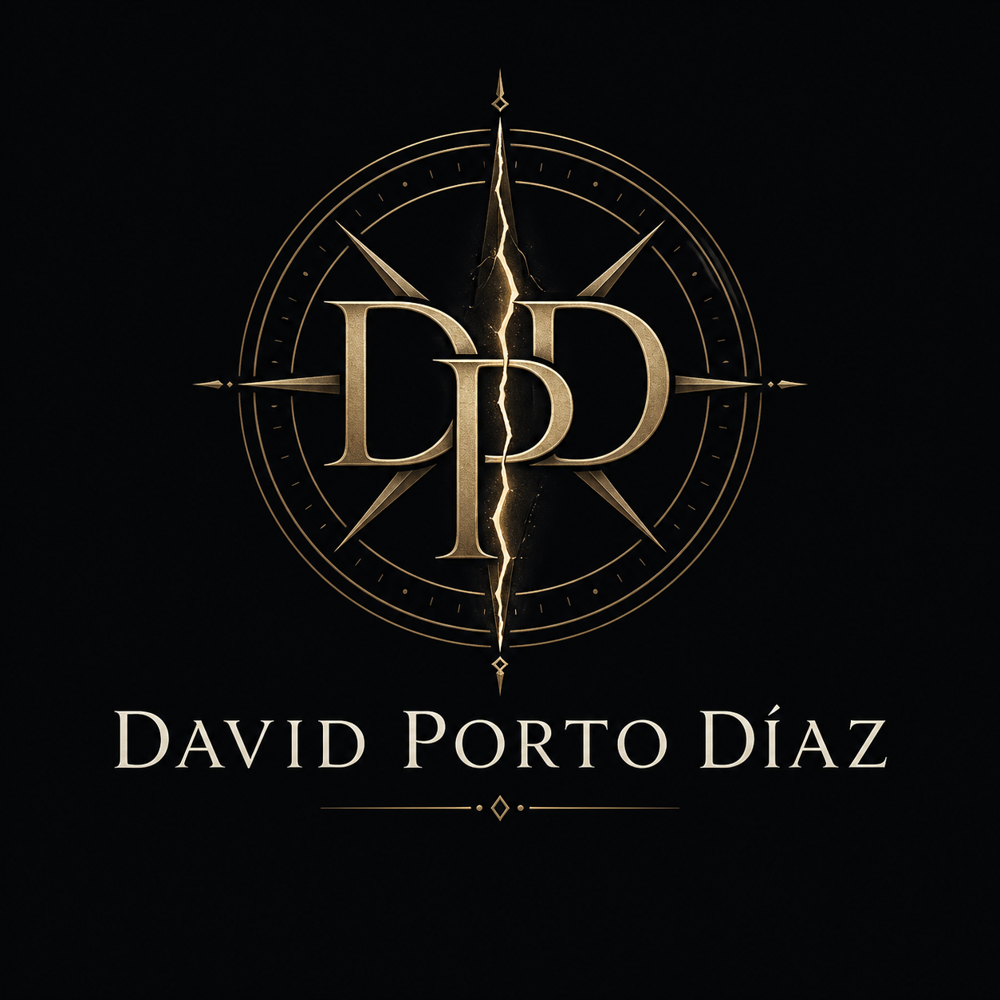
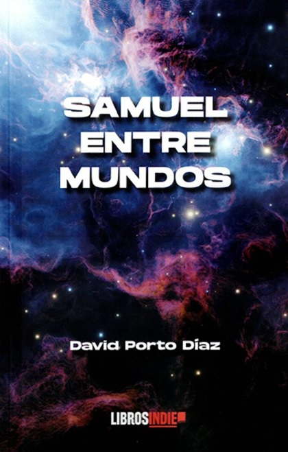
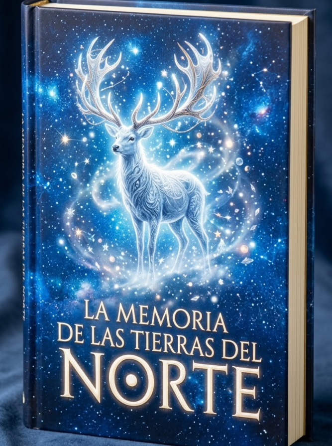

Publicado
Samuel entre mundos · Libros Indie

David Porto Díaz EscritorFantasía · Romantasy · Ficción especulativa
Fantasía y romantasy donde la magia siempre tiene un precio.
Escribo historias donde cruzar hacia la verdad exige una decisión, una pérdida o un secreto que no se puede desaprender.
Publicado
Samuel entre mundos · Libros Indie
En publicación
Las manecillas del recuerdo · Monza Ediciones
Premio literario
Primer Premio · Letras Como Espada · 2026
¿Por dónde empezar?
Para lectores
Descubre Samuel entre mundos, una novela de fantasía con portales, secretos familiares y magia con coste.
Comprar el libroPara prensa y librerías
Bio, ficha técnica, fotos, portada y contacto para entrevistas, firmas o presentaciones.
Ir al kit de prensaPara seguir novedades
Próximas firmas, nuevos proyectos y noticias del autor sin depender del algoritmo.
Contacto y redesSobre mí
David Porto Díaz nació en Pontevedra y reside en Madrid. Con formación en marketing online y experiencia en tecnología, entiende tanto la sensibilidad del lector como la estructura que sostiene una historia. Esa combinación —análisis, ritmo y mirada hacia el público— atraviesa también su forma de escribir.
Debutó con Samuel entre mundos, una novela de fantasía que combina aventura, identidad y crecimiento personal. Le interesan las historias que avanzan, proponen preguntas y respetan la inteligencia del lector.
Cuando no escribe, viaja, busca buena comida y toma notas mentales de lugares que quizá acaben convertidos en escenarios.

Lectura, viaje y oficio
Viajar, leer y observar lugares reales alimenta la parte menos visible de la escritura: el detalle concreto.
Libros

Amazon · Casa del Libro · Más librerías
La medalla de Samuel Osborne no brilla: late. En Noveris, todo está hecho de normas, silencios y puertas cerradas. Cuando la barrera empieza a ceder, una verdad emerge: no es un error. Es por él.
El Espejo Ancestral guarda la respuesta. Grimlor espera. Las silenciadoras, también. La pregunta no es si cruzar: es qué verdad merece el precio.
También disponible en
En proceso de publicación · Monza Ediciones
Nueva novela en proceso de publicación con editorial Monza Ediciones. Más detalles próximamente.
En desarrollo
Ficción especulativa de cuerpo, poder y domesticación. Proyecto en desarrollo.
Novedades y contacto
Nuevas publicaciones, eventos, firmas y proyectos. Sin depender del algoritmo.
Otros proyectos

Antología colaborativa · Fantasía
Participación en antología colaborativa de fantasía. Un relato de superstición, memoria y objetos que no dejan marchar a quien los recoge.
Ver proyectoRelatos
Textos breves, premios literarios y piezas publicadas o seleccionadas en certámenes de ámbito nacional.
Agenda
Próximo evento
Firma y encuentro con lectores. Detalles próximamente.
Eventos anteriores
Bar Aleatorio · Madrid. Presentación oficial del debut.
Premios y reconocimientos
XII Certamen Literario de Microrrelatos «De amor»
Letras Como Espada · Fallo comunicado por la organización.
Ver bases del certamenPremio Nacional de Literatura Infantil Juan Andrés Teno · babidibulibros
Seleccionado entre los diez finalistas del certamen nacional.
Ver publicaciónLa memoria de las tierras del norte · Diversidad Literaria
Proyecto colaborativo de fantasía seleccionado mediante crowdfunding editorial.
Ver proyectoPrensa
David Porto Díaz es escritor gallego de fantasía, romantasy y ficción especulativa. Autor de Samuel entre mundos (Libros Indie, 2025). Primer Premio en el XII Certamen de Microrrelatos de Letras Como Espada y finalista en el Premio Nacional de Literatura Infantil Juan Andrés Teno.
Nació en Pontevedra y reside en Madrid. Con formación en marketing online y experiencia en el sector tecnológico. Debutó con Samuel entre mundos (Libros Indie). Participó en La memoria de las tierras del norte (Diversidad Literaria). Su próxima novela, Las manecillas del recuerdo, está en proceso de publicación con Monza Ediciones.
Imagen en alta resolución para medios, reseñas y presentaciones.
Solicitar fotoPortada en alta resolución para medios, librerías y reseñas.
Solicitar portadaSamuel entre mundos · Libros Indie · ISBN 9791387659776 · Tapa blanda · Más de 400 páginas · Castellano · Fantasía / aventura.
Ver en editorialPara entrevistas, notas de prensa, coordinación editorial o solicitud de ejemplares de reseña.
Escribir a prensaPreguntas frecuentes
En Amazon, Casa del Libro, Librería Le, Librería Serendipia y Bookish. Consulta también en tu librería habitual indicando el ISBN: 9791387659776.
De momento, Samuel entre mundos solo está disponible en formato tapa blanda. No existe edición en ebook por ahora.
Sí. Consulta la sección de eventos para ver próximas fechas, o escríbeme directamente para coordinar.
Escribe a davidpd89@gmail.com con el asunto "Prensa" o "Librería". También puedes consultar el kit de prensa completo.
Contacto
Para entrevistas, firmas, colaboraciones o consultas sobre derechos, puedes escribirme directamente.